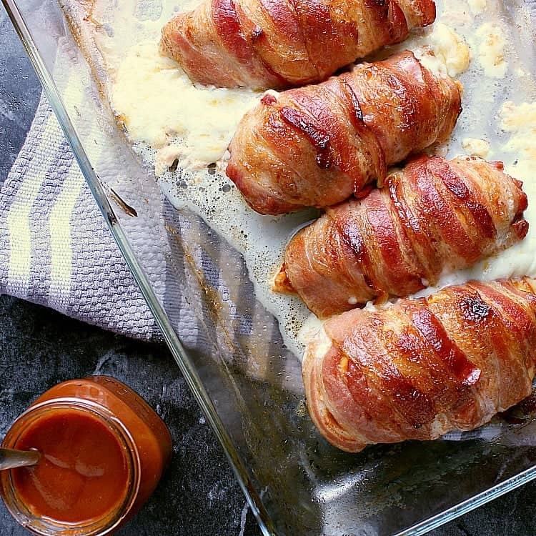

Bacon Wrapped Stuffed Chicken Breast

Description
Delicious chicken breasts that are stuffed with a cheese of your choice, and then wrapped around
a single layer of bacon. Air fry this recipe to get that nice crispy taste on the outside, and juicy
on the inside.
Ingredients
- 3 skinless, boneless chicken breasts
- 1 teaspoon lemon-pepper seasoning, or to taste
- 3 slices Monterey Jack cheese
- 6 spears fresh asparagus
- 9 slices bacon
- 12 wooden toothpicks
Steps
- Preheat the air fryer to 350 degrees F (175 degrees C) according to manufacturer's
instructions.
- Pat chicken pieces dry with paper towels. To butterfly, slice breasts horizontally
through the middle using a sharp knife, beginning at the thickest part,
being careful not to cut all the way through to the other side.
Open the two sides and spread them out like an open book.
- Season both sides with lemon-pepper seasoning. Place 1 slice cheese on each chicken breast.
Cut asparagus spears in half and place 4 halves on top of cheese.
Roll chicken up and over the cheese and asparagus, keeping the stuffing inside each roll.
Wrap each chicken breast with 3 pieces of bacon, using wooden toothpicks to secure the bacon,
where it overlaps.
- Place each bacon-wrapped breast in the air fryer basket and air-fry for 15 minutes.
Turn and cook for 15 minutes more. Test chicken for doneness; an instant-read thermometer
inserted into the center should reach 165 degrees F (74 degrees C).